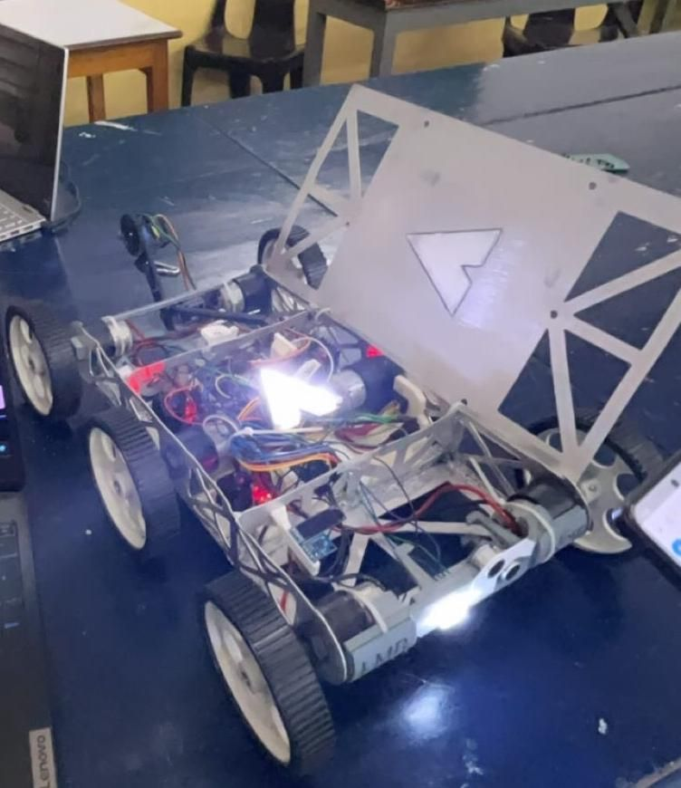
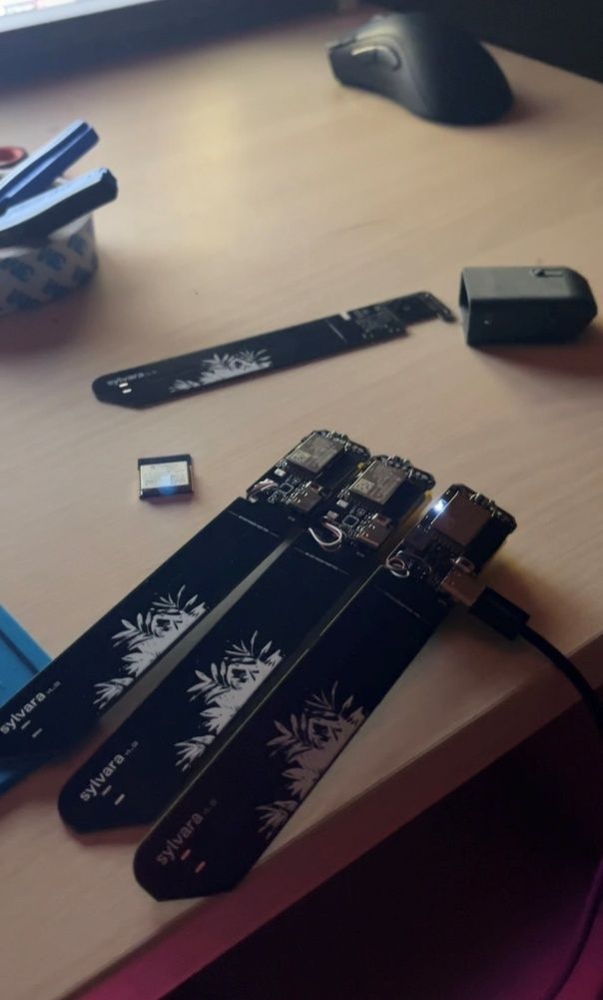
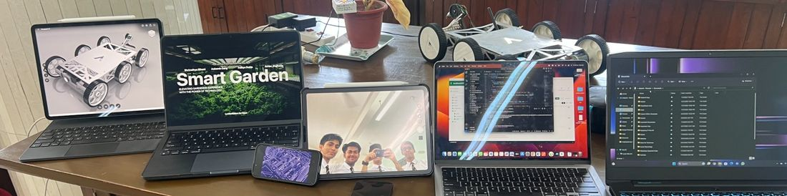
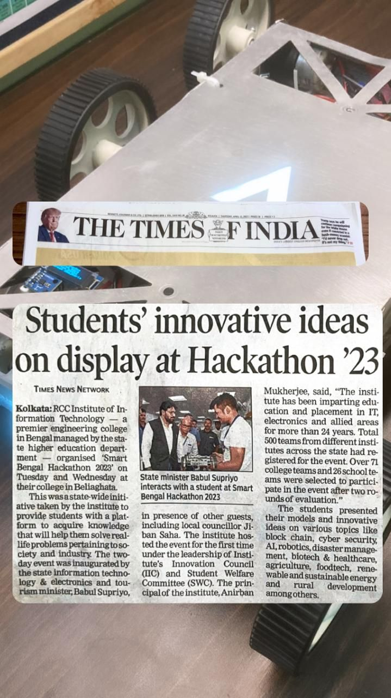

A terrain-adaptive robotic platform built for reliable locomotion across uneven farmland, later extended into a smart agricultural system supporting soil interaction, sensing and basic farming operations.
Design and build a terrain-adaptive robotic platform capable of reliable locomotion across uneven farmland, later extended into a smart agricultural system supporting soil interaction, sensing and basic farming operations.
RoVolt originated as a Class 11 robotics project focused on robust mobility using a WHEG (wheel-leg hybrid) locomotion system. The platform was fully CAD-modeled and fabricated from laser-cut aluminium components, manually brazed into a rigid yet serviceable chassis. Locomotion came from custom 3D-printed WHEGs with a push-rod suspension mechanism, driven by DC motors with encoder feedback and controlled by a Raspberry Pi-based system.
It demonstrated stable traversal across varied terrain, including loose soil and uneven surfaces. For demonstrations and competitions, the system was adapted into a smart agricultural unit — reconfiguring the original 2×3 WHEG layout into a three-wheel configuration and integrating a rear-mounted robotic arm with soil-moisture sensing, ploughing and seeding attachments. An IMU enhanced directional awareness while existing encoders were reused for motion feedback. A companion mobile app and backend enabled real-time monitoring; I led hardware integration and low-level firmware support.
A wheel-leg hybrid design balances mechanical simplicity with terrain adaptability superior to conventional wheeled platforms.
The chassis was designed, laser-cut and brazed manually to ensure structural integrity and rapid iteration without reliance on prefabricated frames.
Reconfiguring the locomotion layout and adding a modular agricultural arm demonstrated functional versatility beyond mobility alone.
Existing encoders were leveraged while integrating inertial sensing to enhance directional stability and reduce system complexity.
RoVolt was successfully demonstrated at multiple expos and competitive hackathons, achieving top placements and awards. Live evaluations highlighted its reliable terrain traversal, modular reconfiguration and functional agricultural tooling — validating both the platform's robustness and its design versatility.



